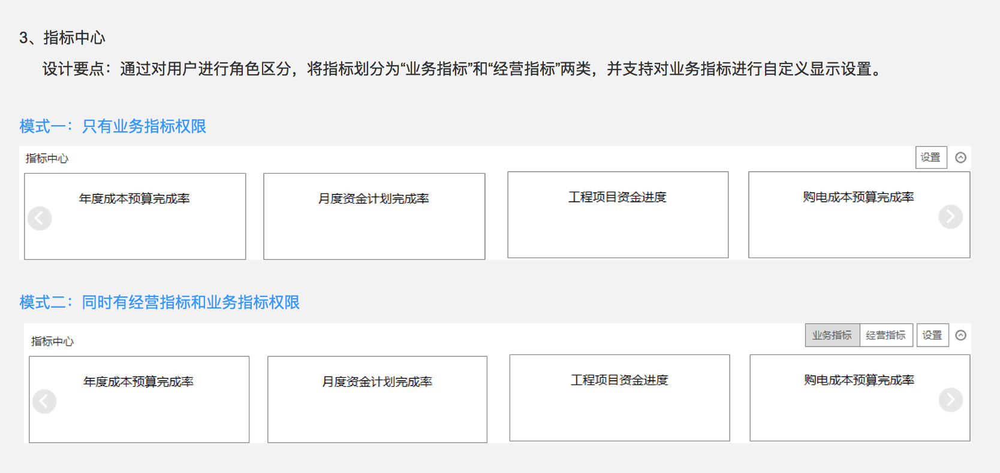
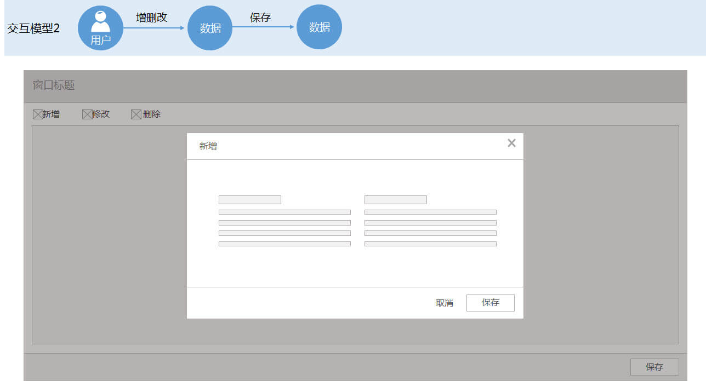
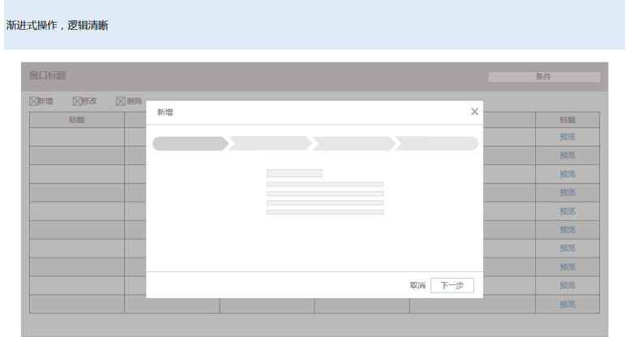

用户体验能否再上升到一个新高度？
2016年步入“十三五”，面对发展新机遇、新挑战，南方电网公司为充分发挥财务管理信息化的重要作用，提出继续提升用户体验的要求。而前期只达成了改造意向，并无确切方向。在接收到任务后，成立了南网专项小组，启动对南网管控系统1.0用户体验问题的分析，目的是通过深入用户研究、分析目前存在问题，给出一套完成的用户体验解决方案给客户。这是之前未有过的尝试，大家一起不断摸索，探究最佳方式。目前阶段方案汇报得到了用户强烈的认可，纳入新的合同中规划实现落地。
初探
首先我们想获得全局的认识，能更客观把握南网财务管控的整体情况。
当前系统存在的问题及分析
2、问题分析：
▪ 用户体验架构与场景有偏差
▪ 没有形成系统化的用户体验需求研究
▪ 产品规模大，在短期内升级换代过程中出现不一致现象
用户体验架构及特点
架构特点
稳定性——清晰的架构层级，应对不同的需求，便于标准化工作展开，也更易于培养用户操作习惯
灵活性——操作路径更灵活，更易于用户角色的分层分级，满足用户个性化要求
复用性——基于同一个平台，相同元素可复用
个人门户升级方案

角色2：财务部门领导
角色3：财务部门业务人员
角色4：业务部门领导
角色5：业务部门业务人员
角色6：系统管理员
业务功能界面升级方案
指标报表类——简洁化、自定义、多维化

业务处理类——清晰的任务流、语义化、区域合理划分

- 
系统管理类——可视化、渐进式

可以说，这次方案真的让我获益匪浅，跟着小组成员一起恶补信息架构的知识，一起跟实施地同事做调研。每次有这种参与大的系统改造升级项目时我总是很珍惜，因为这个时候才有机会思考很多平时设计单个界面所不能想到的问题。当站在一个更加宏观的角度看待整个产品，看待不同层级里的生态体系的时候，就真的能体会到这种思维的力量。虽然一开始是走了些弯路，但试错的过程是能学到很多的。最大的收获，莫过于思维高度和看得更远更系统化，这些都是只做一个界面的设计所感受不到的。